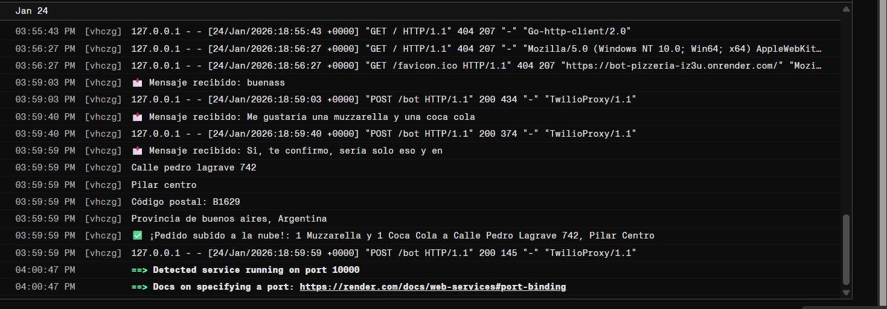
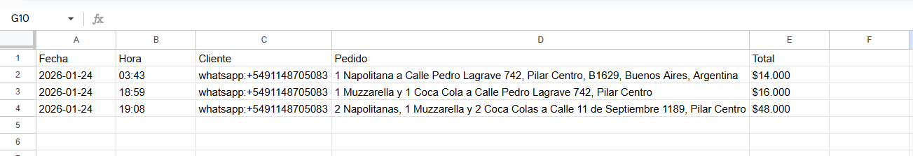
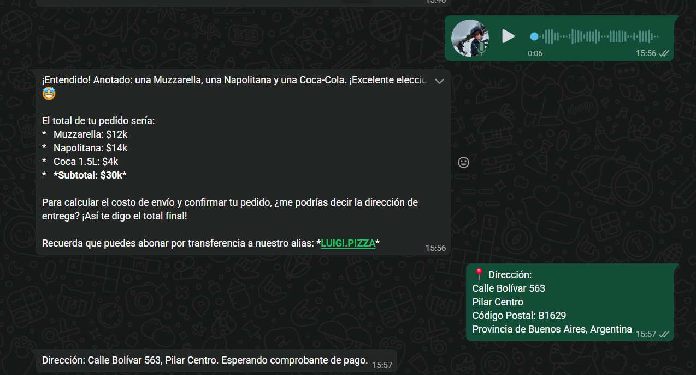
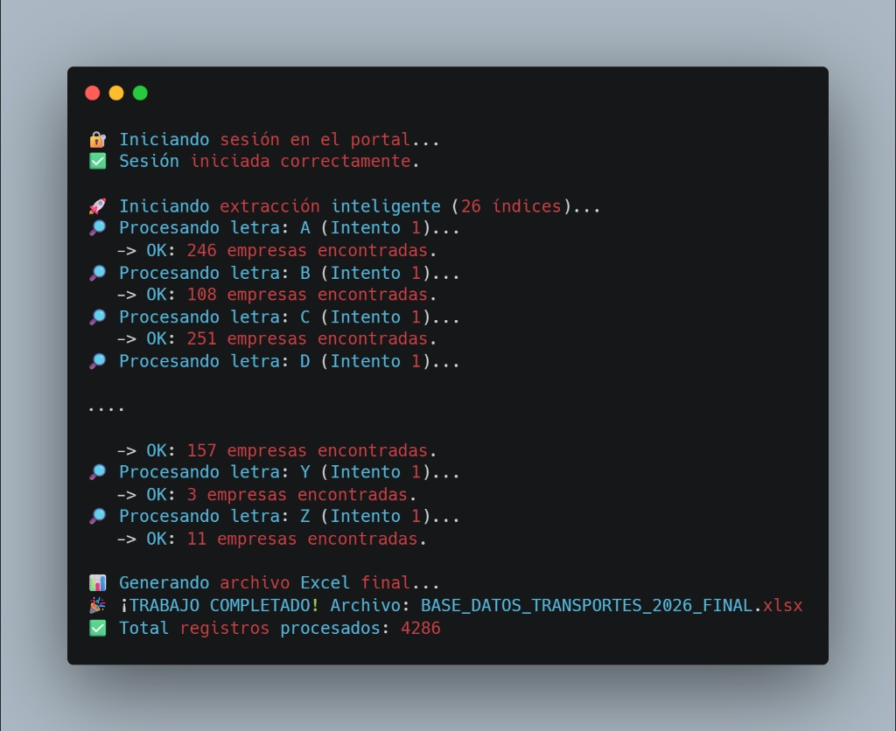
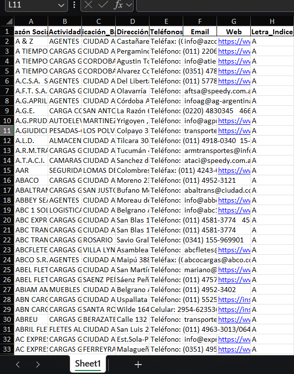
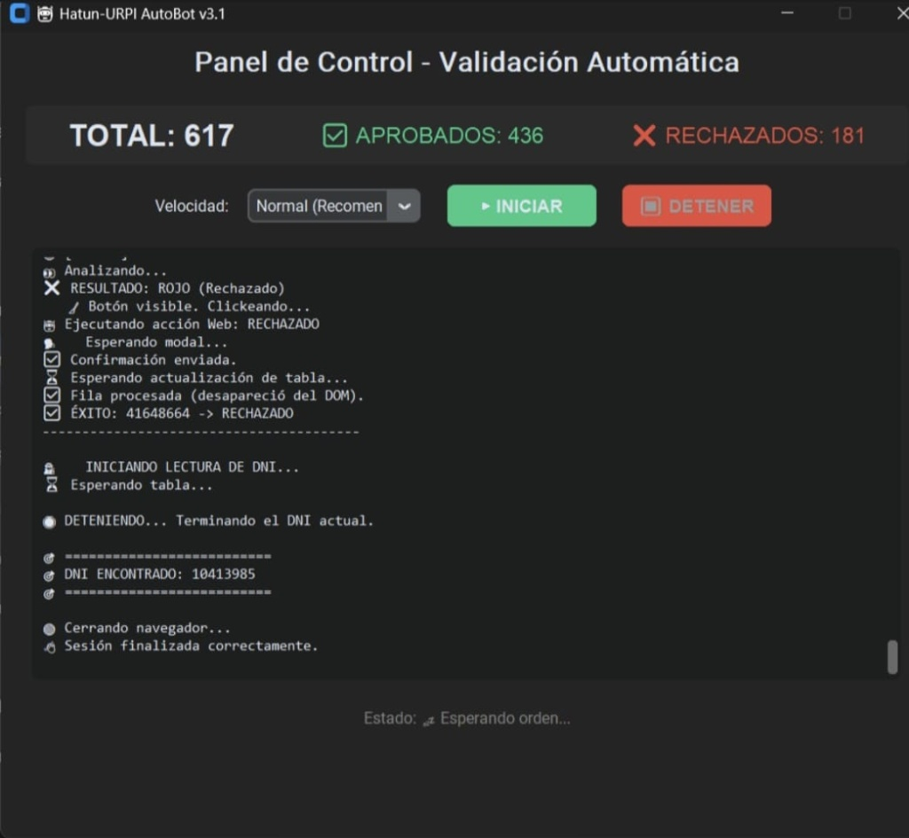

Consultor Tecnológico & Arquitecto Backend
Transformo tareas manuales y cuellos de botella operativos en ecosistemas automatizados y rentables.
Mi perfil se centra en la intersección exacta entre la estrategia de negocio y la ejecución técnica. Entiendo el "qué" necesita una empresa para optimizar sus procesos y sé exactamente "cómo" se construye a nivel de arquitectura y código.
Como estudiante de la Lic. en Sistemas (UBA) y Consultor Independiente, diseño ecosistemas digitales para automatizar flujos de trabajo, ahorrar cientos de horas-hombre y evitar que los requerimientos se pierdan en la traducción entre el cliente y el servidor.
Mis Especialidades: Arquitectura Backend, Agentes de Inteligencia Artificial (NLP), Web Scraping B2B, Automatización RPA y Análisis Funcional.



Arquitectura y desarrollo de un Asistente Virtual Inteligente integrado a la API oficial de WhatsApp. El sistema pre-califica leads, procesa audios de voz de clientes, calcula costos dinámicamente y registra ventas en bases de datos en tiempo real, operando 24/7 sin intervención humana.
Tech Stack: Python Flask Meta/Twilio API Gemini/OpenAI Google Sheets API
El Impacto: Eliminación de tiempos de espera en atención al cliente y automatización total del registro de pedidos.


Desarrollo de un pipeline de extracción de datos autónomo para generar leads altamente segmentados. El script navega directorios web complejos, maneja rotación de sesiones para evitar bloqueos y aplica ingeniería inversa para limpiar HTML desestructurado, exportando bases de datos listas para CRM.
Tech Stack: Python BeautifulSoup Pandas Manejo de Sesiones
El Impacto: Generación de miles de contactos comerciales verificados en horas, superando la calidad de los barridos tradicionales.

Diseño de un ecosistema de automatización robusto capaz de operar jornadas de 18 horas sin supervisión. El bot sincroniza acciones entre un navegador web y un emulador móvil simultáneamente, aplicando visión artificial para el reconocimiento de patrones y toma de decisiones en pantalla.
Tech Stack: Python Selenium PyAutoGUI Windows Automation
El Impacto: Reducción del 100% de la carga operativa manual en tareas críticas de validación de identidad.
Estoy abierto a roles estratégicos (Analista Funcional, Arquitecto de Soluciones) y a colaboraciones B2B con empresas que necesiten automatizar sus operaciones.
Dejame tu mensaje y evaluamos la viabilidad técnica de tu proyecto o vacante.